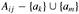
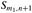

|
|
< Day Day Up > |
|
Our first example is the problem of scheduling several competing activities that require exclusive use of a common resource, with a goal of selecting a maximum-size set of mutually compatible activities. Suppose we have a set S = {a1, a2, ..., an} of n proposed activities that wish to use a resource, such as a lecture hall, which can be used by only one activity at a time. Each activity ai has a start time si and a finish time fi, where 0 ≤ si < fi < ∞. If selected, activity ai takes place during the half-open time interval [si, fi). Activities ai and aj are compatible if the intervals [si, fi) and [sj fj) do not overlap (i.e., ai and aj are compatible if si ≥ fj or sj ≥ fi). The activity-selection problem is to select a maximum-size subset of mutually compatible activities. For example, consider the following set S of activities, which we have sorted in monotonically increasing order of finish time:
|
i |
1 |
2 |
3 |
4 |
5 |
6 |
7 |
8 |
9 |
10 |
11 |
|---|---|---|---|---|---|---|---|---|---|---|---|
|
|
|||||||||||
|
si |
1 |
3 |
0 |
5 |
3 |
5 |
6 |
8 |
8 |
2 |
12 |
|
fi |
4 |
5 |
6 |
7 |
8 |
9 |
10 |
11 |
12 |
13 |
14 |
(We shall see shortly why it is advantageous to consider activities in sorted order.) For this example, the subset {a3, a9, a11} consists of mutually compatible activities. It is not a maximal subset, however, since the subset {a1, a4, a8, a11} is larger. In fact, {a1, a4, a8, a11} is a largest subset of mutually compatible activities; another largest subset is {a2, a4, a9, a11}.
We shall solve this problem in several steps. We start by formulating a dynamic-programming solution to this problem in which we combine optimal solutions to two subproblems to form an optimal solution to the original problem. We consider several choices when determining which subproblems to use in an optimal solution. We shall then observe that we need only consider one choice-the greedy choice-and that when we make the greedy choice, one of the subproblems is guaranteed to be empty, so that only one nonempty subproblem remains. Based on these observations, we shall develop a recursive greedy algorithm to solve the activity-scheduling problem. We shall complete the process of developing a greedy solution by converting the recursive algorithm to an iterative one. Although the steps we shall go through in this section are more involved than is typical for the development of a greedy algorithm, they illustrate the relationship of greedy algorithms and dynamic programming.
As mentioned above, we start by developing a dynamic-programming solution to the activity-selection problem. As in Chapter 15, our first step is to find the optimal substructure and then use it to construct an optimal solution to the problem from optimal solutions to subproblems.
We saw in Chapter 15 that we need to define an appropriate space of subproblems. Let us start by defining sets
Sij = {ak ∈ S : fi ≤ sk < fk ≤ sj} ,
so that Sij is the subset of activities in S that can start after activity ai finishes and finish before activity aj starts. In fact, Sij consists of all activities that are compatible with ai and aj and are also compatible with all activities that finish no later than ai finishes and all activities that start no earlier than aj starts. In order to represent to entire problem, we add fictitious activities a0 and an+1 and adopt the conventions that f0 = 0 and sn+1 = ∞. Then S = S0.n+1, and the ranges for i and j are given by 0 ≤ i, j ≤ n + 1.
We can further restrict the ranges of i and j as follows. Let us assume that the activities are sorted in monotonically increasing order of finish time:
We claim that Sij = Ø whenever i ≥ j. Why? Suppose that there exists an activity ak ∈ Sij for some i ≥ j, so that ai follows aj in the sorted order. Then we would have fi ≤ sk < fk ≤ sj < fj. Thus, fi < fj, which contradicts our assumption that ai follows aj in the sorted order. We can conclude that, assuming that we have sorted the activities in monotonically increasing order of finish time, our space of subproblems is to select a maximum-size subset of mutually compatible activities from Sij, for 0 ≤ i < j ≤ n + 1, knowing that all other Sij are empty.
To see the substructure of the activity-selection problem, consider some non-empty subproblem Sij,[1] and suppose that a solution to Sij includes some activity ak, so that fi ≤ sk < fk ≤ sj. Using activity ak generates two subproblems, Sik (activities that start after ai finishes and finish before ak starts) and Skj (activities that start after ak finishes and finish before aj starts), each of which consists of a subset of the activities in Sij. Our solution to Sij is the union of the solutions to Sik and Skj, along with the activity ak. Thus, the number of activities in our solution to Sij is the size of our solution to Sik, plus the size of our solution to Skj , plus one (for ak).
The optimal substructure of this problem is as follows. Suppose now that an optimal solution Aij to Sij includes activity ak. Then the solutions Aik to Sik and Akj to Skj used within this optimal solution to Sij must be optimal as well. The usual cut-and-paste argument applies. If we had a solution to Sik that included more activities than Aik, we could cut out Aik from Aij and paste in , thus producing a another solution to Sij with more activities than Aij. Because we assumed that Aij is an optimal solution, we have derived a contradiction. Similarly, if we had a solution to Skj with more activities than Akj, we could replace Akj by to produce a solution to Sij with more activities than Aij.
Now we use our optimal substructure to show that we can construct an optimal solution to the problem from optimal solutions to subproblems. We have seen that any solution to a nonempty subproblem Sij includes some activity ak, and that any optimal solution contains within it optimal solutions to subproblem instances Sik and Skj. Thus, we can build an maximum-size subset of mutually compatible activities in Sij by splitting the problem into two subproblems (finding maximum-size subsets of mutually compatible activities in Sik and Skj), finding maximum-size subsets Aik and Akj of mutually compatible activities for these subproblems, and forming our maximum-size subset Aij of mutually compatible activities as
An optimal solution to the entire problem is a solution to S0,n+1.
The second step in developing a dynamic-programming solution is to recursively define the value of an optimal solution. For the activity-selection problem, we let c[i, j] be the number of activities in a maximum-size subset of mutually compatible activities in Sij. We have c[i, j] = 0 whenever Sij = Ø; in particular, c[i, j] = 0 for i ≥ j.
Now consider a nonempty subset Sij. As we have seen, if ak is used in a maximum-size subset of mutually compatible activities of Sij, we also use maximum-size subsets of mutually compatible activities for the subproblems Sik and Skj. Using equation (16.2), we have the recurrence
c[i, j ] = c[i, k] + c[k, j ] + 1.
This recursive equation assumes that we know the value of k, which we do not. There are j - i - 1 possible values for k, namely k = i + 1, ..., j - 1. Since the maximum-size subset of Sij must use one of these values for k, we check them all to find the best. Thus, our full recursive definition of c[i, j] becomes
At this point, it would be a straightforward exercise to write a tabular, bottom-up, dynamic-programming algorithm based on recurrence (16.3). In fact, Exercise 16.1-1 asks you to do just that. There are two key observations, however, that allow us to simplify our solution.
Consider any nonempty subproblem Sij, and let am be the activity in Sij with the earliest finish time:
fm = min {fk : ak ∈ Sij}.
Then
Activity am is used in some maximum-size subset of mutually compatible activities of Sij.
The subproblem Sim is empty, so that choosing am leaves the subproblem Smj as the only one that may be nonempty.
Proof We shall prove the second part first, since it's a bit simpler. Suppose that Sim is nonempty, so that there is some activity ak such that fi ≤ sk < fk ≤ sm < fm. Then ak is also in Sij and it has an earlier finish time than am, which contradicts our choice of am. We conclude that Sim is empty.
To prove the first part, we suppose that Aij is a maximum-size subset of mutually compatible activities of Sij, and let us order the activities in Aij in monotonically increasing order of finish time. Let ak be the first activity in Aij. If ak = am, we are done, since we have shown that am is used in some maximum-size subset of mutually compatible activities of Sij. If ak ≠ am, we construct the subset  The activities in are disjoint, since the activities in Aij are, ak is the first activity in Aij to finish, and fm ≤ fk. Noting that has the same number of activities as Aij, we see that is a maximum-size subset of mutually compatible activities of Sij that includes am.
Why is Theorem 16.1 so valuable? Recall from Section 15.3 that optimal sub-structure varies in how many subproblems are used in an optimal solution to the original problem and in how many choices we have in determining which subproblems to use. In our dynamic-programming solution, two subproblems are used in an optimal solution, and there are j-i-1 choices when solving the subproblem Sij. Theorem 16.1 reduces both of these quantities significantly: only one subproblem is used in an optimal solution (the other subproblem is guaranteed to be empty), and when solving the subproblem Sij, we need consider only one choice: the one with the earliest finish time in Sij. Fortunately, we can easily determine which activity this is.
In addition to reducing the number of subproblems and the number of choices, Theorem 16.1 yields another benefit: we can solve each subproblem in a top-down fashion, rather than the bottom-up manner typically used in dynamic programming. To solve the subproblem Sij, we choose the activity am in Sij with the earliest finish time and add to this solution the set of activities used in an optimal solution to the subproblem Sij. Because we know that, having chosen am, we will certainly be using a solution to Smj in our optimal solution to Sij, we do not need to solve Smj before solving Sij. To solve Sij, we can first choose am as the activity in Sij with the earliest finish time and then solve Smj.
Note also that there is a pattern to the subproblems that we solve. Our original problem is S = S0.n+1. Suppose that we choose as the activity in S0.n+1 with the earliest finish time. (Since we have sorted activities by monotonically increasing finish times and f0 = 0, we must have m1 = 1.) Our next subproblem is . Now suppose that we choose as the activity in with the earliest finish time. (It is not necessarily the case that m2 = 2.) Our next subproblem is . Continuing, we see that each subproblem will be of the form for some activity number mi. In other words, each subproblem consists of the last activities to finish, and the number of such activities varies from subproblem to subproblem.
There is also a pattern to the activities that we choose. Because we always choose the activity with the earliest finish time in  , the finish times of the activities chosen over all subproblems will be strictly increasing over time. More-over, we can consider each activity just once overall, in monotonically increasing order of finish times.
, the finish times of the activities chosen over all subproblems will be strictly increasing over time. More-over, we can consider each activity just once overall, in monotonically increasing order of finish times.
The activity am that we choose when solving a subproblem is always the one with the earliest finish time that can be legally scheduled. The activity picked is thus a "greedy" choice in the sense that, intuitively, it leaves as much opportunity as possible for the remaining activities to be scheduled. That is, the greedy choice is the one that maximizes the amount of unscheduled time remaining.
Now that we have seen how to streamline our dynamic-programming solution, and how to treat it as a top-down method, we are ready to see an algorithm that works in a purely greedy, top-down fashion. We give a straightforward, recursive solution as the procedure RECURSIVE-ACTIVITY-SELECTOR. It takes the start and finish times of the activities, represented as arrays s and f, as well as the starting indices i and j of the subproblem Si.j it is to solve. It returns a maximum-size set of mutually compatible activities in Si.j. We assume that the n input activities are ordered by monotonically increasing finish time, according to equation (16.1). If not, we can sort them into this order in O(n lg n) time, breaking ties arbitrarily. The initial call is RECURSIVE-ACTIVITY-SELECTOR(s, f, 0, n + 1).
RECURSIVE-ACTIVITY-SELECTOR(s, f, i, j) 1 m ← i + 1 2 while m < j and sm < fi ▹ Find the first activity in Sij. 3 do m ← m + 1 4 if m < j 5 then return {am} ∪ RECURSIVE-ACTIVITY-SELECTOR(s, f, m, j) 6 else return Ø
Figure 16.1 shows the operation of the algorithm. In a given recursive call RECURSIVE-ACTIVITY-SELECTOR(s, f, i, j), the while loop of lines 2-3 looks for the first activity in Sij. The loop examines ai+1, ai+2, ..., aj-1, until it finds the first activity am that is compatible with ai; such an activity has sm ≥ fi. If the loop terminates because it finds such an activity, the procedure returns in line 5 the union of {am} and the maximum-size subset of Smj returned by the recursive call RECURSIVE-ACTIVITY-SELECTOR(s, f, m, j). Alternatively, the loop may terminate because m ≥ j, in which case we have examined all activities whose finish times are before that of aj without finding one that is compatible with ai. In this case, Sij = Ø, and so the procedure returns Ø in line 6.

Assuming that the activities have already been sorted by finish times, the running time of the call RECURSIVE-ACTIVITY-SELECTOR(s, f, 0, n + 1) is Θ(n), which we can see as follows. Over all recursive calls, each activity is examined exactly once in the while loop test of line 2. In particular, activity ak is examined in the last call made in which i < k.
We easily can convert our recursive procedure to an iterative one. The procedure RECURSIVE-ACTIVITY-SELECTOR is almost "tail recursive" (see Problem 7-4): it ends with a recursive call to itself followed by a union operation. It is usually a straightforward task to transform a tail-recursive procedure to an iterative form; in fact, some compilers for certain programming languages perform this task automatically. As written, RECURSIVE-ACTIVITY-SELECTOR works for any subproblem Sij, but we have seen that we need to consider only subproblems for which j = n + 1, i.e., subproblems that consist of the last activities to finish.
The procedure GREEDY-ACTIVITY-SELECTOR is an iterative version of the procedure RECURSIVE-ACTIVITY-SELECTOR. It also assumes that the input activities are ordered by monotonically increasing finish time. It collects selected activities into a set A and returns this set when it is done.
GREEDY-ACTIVITY-SELECTOR(s, f) 1 n ← length[s] 2 A ← {a1} 3 i ← 1 4 for m ← 2 to n 5 do if sm ≥ fi 6 then A ← A ∪ {am} 7 i ← m 8 return A
The procedure works as follows. The variable i indexes the most recent addition to A, corresponding to the activity ai in the recursive version. Since the activities are considered in order of monotonically increasing finish time, fi is always the maximum finish time of any activity in A. That is,
Lines 2-3 select activity a1, initialize A to contain just this activity, and initialize i to index this activity. The for loop of lines 4-7 finds the earliest activity to finish in Si.n+1. The loop considers each activity am in turn and adds am to A if it is compatible with all previously selected activities; such an activity is the earliest to finish in Si.n+1. To see if activity am is compatible with every activity currently in A, it suffices by equation (16.4) to check (line 5) that its start time sm is not earlier than the finish time fi of the activity most recently added to A. If activity am is compatible, then lines 6-7 add activity am to A and set i to m. The set A returned by the call GREEDY-ACTIVITY-SELECTOR(s, f) is precisely the set returned by the call RECURSIVE-ACTIVITY-SELECTOR(s, f, 0, n + 1).
Like the recursive version, GREEDY-ACTIVITY-SELECTOR schedules a set of n activities in Θ(n) time, assuming that the activities were already sorted initially by their finish times.
Give a dynamic-programming algorithm for the activity-selection problem, based on the recurrence (16.3). Have your algorithm compute the sizes c[i, j] as defined above and also produce the maximum-size subset A of activities. Assume that the inputs have been sorted as in equation (16.1). Compare the running time of your solution to the running time of GREEDY-ACTIVITY-SELECTOR.
Suppose that we have a set of activities to schedule among a large number of lecture halls. We wish to schedule all the activities using as few lecture halls as possible. Give an efficient greedy algorithm to determine which activity should use which lecture hall.
(This is also known as the interval-graph coloring problem. We can create an interval graph whose vertices are the given activities and whose edges connect incompatible activities. The smallest number of colors required to color every vertex so that no two adjacent vertices are given the same color corresponds to finding the fewest lecture halls needed to schedule all of the given activities.)
Not just any greedy approach to the activity-selection problem produces a maximum-size set of mutually compatible activities. Give an example to show that the approach of selecting the activity of least duration from those that are compatible with previously selected activities does not work. Do the same for the approaches of always selecting the compatible activity that overlaps the fewest other remaining activities and always selecting the compatible remaining activity with the earliest start time.
[1]We will sometimes speak of the sets Sij as subproblems rather than just sets of activities. It will always be clear from the context whether we are referring to Sij as a set of activities or the subproblem whose input is that set.
|
|
< Day Day Up > |
|